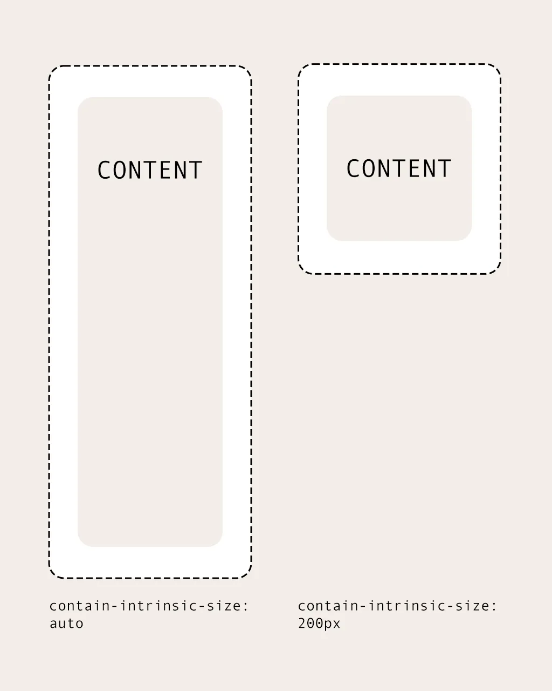
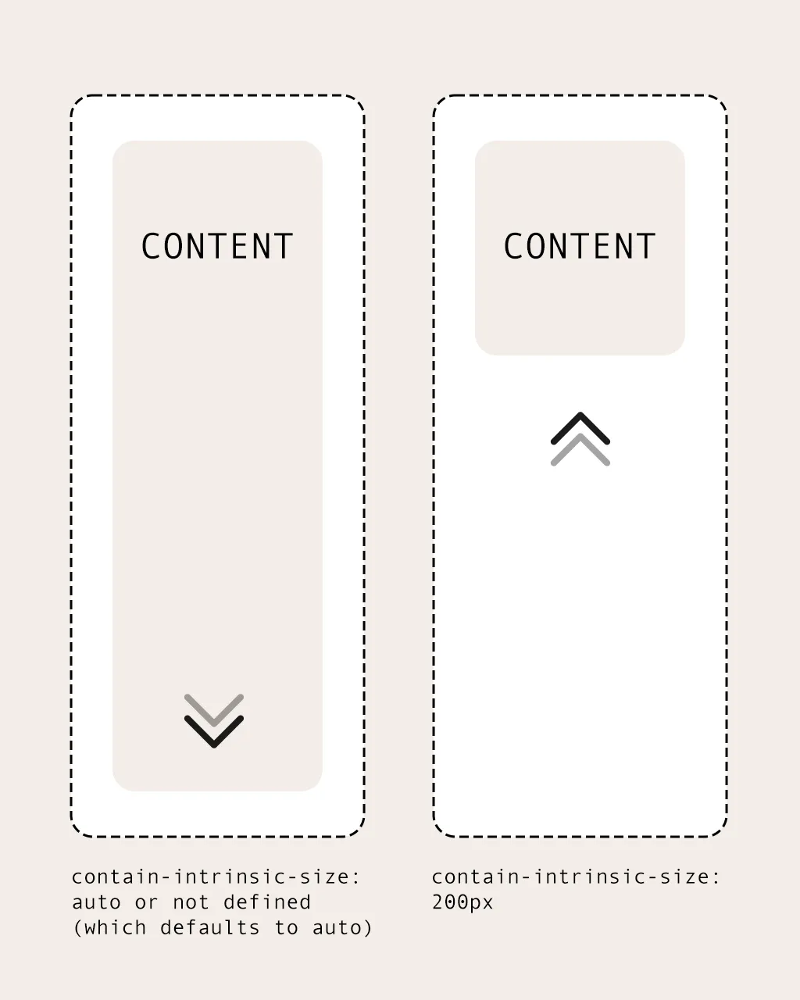

As CSS continues to evolve in 2025, there’s a powerful one-liner that can dramatically
improve layout performance:
contain-intrinsic-size. This property, when paired with
contain, offers a simple but
effective way to optimize rendering performance, particularly for dynamic content and
complex layouts. In this article, we'll explore how
contain-intrinsic-size works,
its practical applications, and how it can be a game-changer for experienced developers.
...
contain-intrinsic-size?
The
contain-intrinsic-size
property in CSS is used in conjunction with the
contain property to define
the intrinsic size of an element before it is fully rendered. This is particularly useful
when you need to control the size of an element that will later be dynamically sized based
on its content. It helps prevent unnecessary layout recalculations (reflows) and repaints,
making it a crucial tool for performance optimization.
element {
contain: layout;
contain-intrinsic-size: 200px; /* Set a temporary size */
}In this example, the element is initially given a size of 200px while it waits for its final content to be rendered. Once the content is available, the size will be adjusted accordingly.
contain-intrinsic-size works
The primary use case of contain-intrinsic-size is to provide a temporary placeholder size for elements that will later be resized based on their content or dynamic calculations. This placeholder helps the browser handle layout changes efficiently without triggering unnecessary reflows.
Example:
.container {
contain: layout;
contain-intrinsic-size: 300px;
}In this example, .container will initially be displayed with a size of 300px, even if its content eventually has a different size. This is particularly helpful when the size of the container needs to be calculated dynamically, and a predefined size helps stabilize the layout.
One common issue in web design is layout shifting, where the size and position of elements change during the page load. By using contain-intrinsic-size, you can prevent the browser from recalculating the layout unnecessarily, leading to a more stable layout, especially when loading content asynchronously, images, or dynamically generated components.
Example:
.card {
contain: layout;
contain-intrinsic-size: 250px;
}This ensures that the .card component initially appears with a predefined size and only adjusts once the actual content is available. This technique is particularly valuable for lazy loading or asynchronous content loading, as it maintains a stable layout before the final data is fully rendered.
In modern responsive designs, it’s essential to have containers that adjust to different screen sizes. contain-intrinsic-size can be effectively used to define the size of a container relative to the layout of the parent element or the viewport.
Example:
.responsive-container {
contain: layout;
contain-intrinsic-size: 50vw;
}In this case, the .responsive-container takes up 50% of the viewport width. This technique can be used to create fluid layouts that work well with dynamic content or images that need to adjust to the container's size.
contain-intrinsic-size
The main benefits of using contain-intrinsic-size lie in performance optimization and the prevention of layout recalculations. In large, complex layouts or on resource-constrained devices, this technique can significantly reduce rendering costs and page load times.
By using contain, an element is treated in its own isolated layout environment, meaning that changes to this element won’t affect adjacent layouts. This is crucial for performance because the browser only needs to recalculate the layout when changes are made to the contents inside the element.
Suppose you have a gallery component that contains images, and the size of the images is not known upfront. Using contain-intrinsic-size ensures that the container always has a predefined size even before the images are fully loaded:
.gallery-item {
contain: layout;
contain-intrinsic-size: 300px;
/* Additional styling for the image */
}In a lazy-loaded application, you can use contain-intrinsic-size to define the size of the container before the image is fully loaded:
.lazy-image-container {
contain: layout;
contain-intrinsic-size: 400px;
}
In a grid layout where the size of cells depends on their content, contain-intrinsic-size ensures a consistent layout even before the content is available:
.grid-item {
contain: layout;
contain-intrinsic-size: 100px;
/* Further layout options */
}
contain-intrinsic-size is a
powerful and simple tool for developers who want to optimize the performance of their web
applications. By providing a temporary size for elements before their final content is
rendered, this property helps avoid unnecessary reflows and repaints, leading to a more
stable and efficient layout. It’s particularly valuable for dynamic content, lazy loading,
and responsive design, making it an essential part of modern CSS development.
This one-liner can drastically improve the user experience on your site, ensuring fast and smooth page loads without sacrificing performance or layout stability. Embrace this property in 2025, and take your CSS to the next level!
...
he/she
Thanks for sharing
Reply
he/she
This looks cool if your components don't scale up and down with viewport size. On the other hand, the skeleton type component might be better for most cases since it gives the user feedback that component is not fully rendered yet
Reply
I am a long time web developer - yet - I don’t understand the value of this technique. What do you mean exactly by “consistent”? Why is that important? In what way does this impact performance? I think you need to explain the inner details in a great deal more depth.
Reply